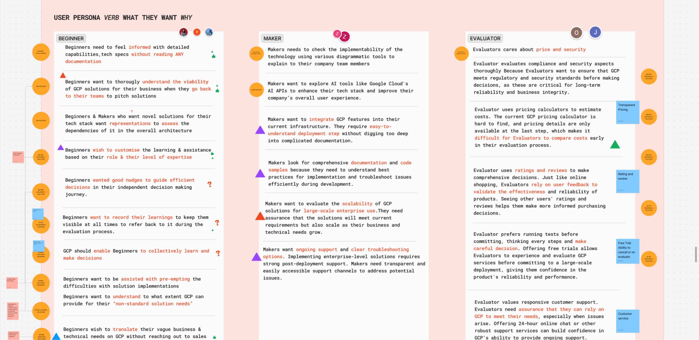
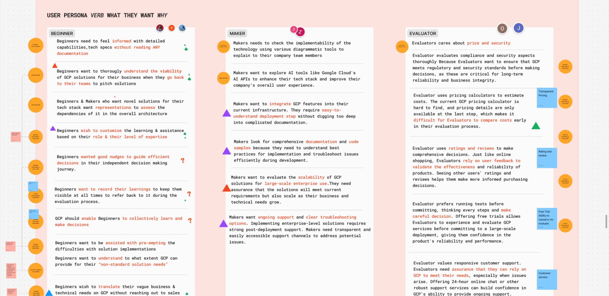

Google Cloud Product Browsing Redesign
Timeline
4 months
Role
UI/UX Designer, Content Strategist
Tools
Figma, Google Meet
Skills
User Research, User Flow Design, Stakeholder Interviews, Cross-functional Teamwork, Project Management
Overview
Problem
Navigating cloud technology can be overwhelming, with hundreds of products and features that leave users unsure about which tools best meet their needs. Our client Google Cloud wanted us to simplify the traditional cloud product browsing experience, making it easier for prospective customers to explore their cloud products and understand their value.
Outcome
We developed high-fidelity prototypes that transformed the Google Cloud product catalog, introducing dynamic filters and AI-driven personalization to create a more user-friendly and engaging experience. As part of a 7-person team, I played a key role in defining project goals, keeping the team aligned, and ensuring our deliverables were polished and impactful.
End Result
Final Design Showcase
In just four months, we went from being completely new to cloud technology to deeply understanding our users and delivering a fresh, user-focused redesign of Google Cloud's product catalog.
1. Simplified design to decrease user scrolling
Google Cloud's wide range of categories make finding specific products time-consuming, as users need to keep scrolling and scrolling. We simplified the catalog by displaying main categories and subcategories at a glance, allowing users to locate products quickly and efficiently.
2. Industry and Project Size filters for personalization
We learned that users often get overwhelmed when they enter the catalog page and struggle to find which products are best for them. To address this, we introduced dynamic filters that allow users to personalize their product search based on their needs and preferences.
3. Product Evaluation - Search Page
To further address the challenge users face in translating vague business needs, we introduced a Product Evaluation page. This page not only tracks their liked products but also uses AI to assess them. The input fields come pre-filled with example sentences to make the process easier.
4. Product Evaluation - Result Page
The AI-generated evaluation results clearly highlight the recommended liked products, along with their pricing and technical details. Other recommended products are presented at the bottom. Users also have easy access to the product page, documentation, or product video for further information, which they find valuable. This page helps users make informed decisions.
Balancing Complexity and User Clarity
Challenges I faced
This project was a challenging yet rewarding experience. From the project itself to communicating with busy stakeholders, I encountered several obstacles that I had to overcome.
Unfamiliar Terrain 🗺️
Cloud technology was completely new to us, and its broad, complex concepts were challenging to understand. To get up to speed, we dove into product discovery—conducting UX audits, analyzing Google's internal research, and creating personas to focus our efforts.
Too Many Possibilities 🎯
Redesigning the entire cloud ecosystem was an enormous task. With so many possible improvements, narrowing our focus felt overwhelming. After thoughtful discussions and guidance from our mentor, we decided to concentrate on redesigning the product catalog page to keep the project manageable.
Stakeholder Expectations 🤝
Working with busy Googlers had its challenges. While stakeholders had high expectations, their availability was limited. To keep everything on track, I facilitated meetings, shared clear updates, and made sure we stayed aligned on goals.
Collaboration Across a Large Team 👥
Redesigning one page with 7 designers wasn't easy. Everyone has different perspectives, so maintaining clarity and alignment was critical. During meetings, I clarified details and encouraged everyone to share their ideas, ensuring we stayed efficient and produced a cohesive design.
Process
How we reached our end goal successfully
From user journey mapping to high-fidelity prototyping, we utilized all kinds of design methods to ensure our final product was addressing the right user problem.
1. Diving into the Cloud
To tackle the unfamiliarity with cloud technology, we started by immersing ourselves in the ecosystem. We studied cloud technology, conducted competitive analysis, and reviewed customer feedback. Next, we performed a UX audit of the Google Cloud product catalog, analyzing existing pages to identify usability issues and areas for improvement.
We also reviewed findings from Google's UXR team, which validated many of our observations and introduced new insights about user behavior. To better empathize with diverse users, we created hypothetical personas to clarify user needs and goals. Lastly, we developed hypotheses about user pain points to guide our design decisions.
 

2. Sparking Bold Ideas
To reimagine the product catalog, I conducted moodboarding sessions, drawing inspiration from competitor websites and e-commerce platforms. The wide scope of this project initially felt overwhelming, so we worked closely with our mentor to narrow the focus to a product page redesign.
In team ideation sessions, we prioritized ideas through voting. The concepts were divided into two directions: an interaction-focused journey for a more visually engaging experience, and an AI-driven journey for greater personalization. We then split into two groups to develop these ideas further.

3. Grounding Ideas in Insights
To validate our designs, we conducted stakeholder interviews with Googlers from various roles, ranging from design, technical to product strategy.
I ensured these interviews stayed on track by preparing clear questions and avoiding bias by not presenting unfinished designs. This process helped us confirm our hypotheses and align our vision with real-world needs.


4. Bringing Ideas to Life
As advised by our mentor, we combined the strengths of both interaction-focused and AI-driven concepts to develop a prototype featuring dynamic filters and AI-powered personalization. These designs greatly enhanced the efficiency of product discovery.
Throughout this phase, I frequently reviewed design files and deliverables to ensure they were error-free and polished. When issues went unnoticed, I proactively fixed them to maintain quality and consistency.
Reflection
What this project taught me the most was the importance of proactive communication and collaboration. I often facilitated discussions when Zoom meetings fell into awkward silence and ensured action items—such as booking times or setting deadlines—were completed when others overlooked them. Regularly clarifying the project goals with our mentor kept us on track. It was incredibly rewarding when a teammate remarked, "This project wouldn't be as successful without you."
Although this was an ideation project, testing features like personalization and evaluation tools with real users would be the next potential step. Finally, I would love to explore more unconventional ideas, such as removing traditional product cards, which can freshen my thinking and break traditional norms even more.